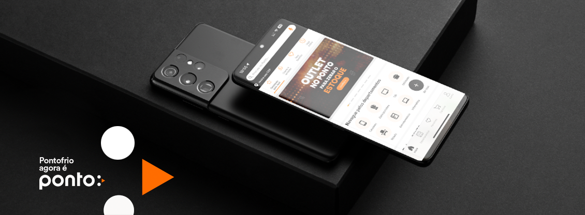
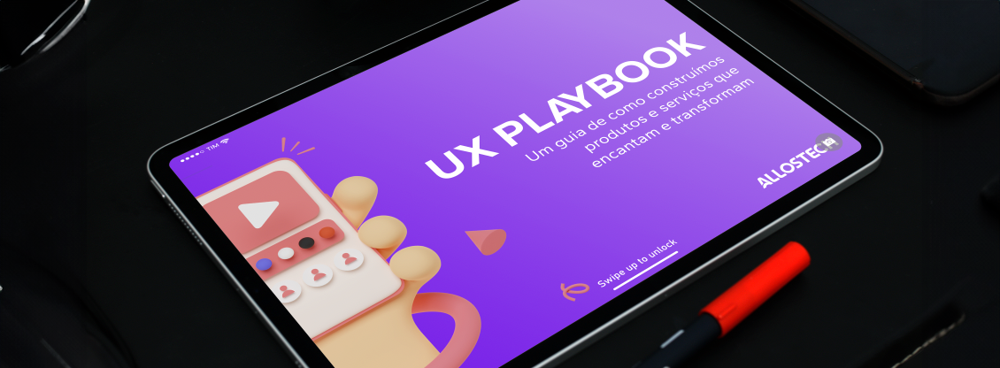
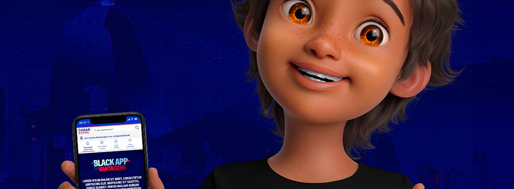

SuperApp Magalu
Participei do primeiro time de UX que criou o SuperApp Magalu, transformando um aplicativo de varejo em uma plataforma multifuncional, enfrentando o desafio de expandir a oferta para incluir uma variedade de serviços.
Rebranding App Ponto
O time de UX design que liderei foi responsável pela refatoração completa da marca, implementada tanto no site quanto no aplicativo, durante a transição de marca de Ponto Frio para Ponto.

Ux Playbook Aliansce
Em colaboração com o time de product design da Aliansce, contribuí para a criação dos primeiros guidelines de UX para toda a empresa

BlackApp Casas Bahia
Liderando o time de UX do aplicativo das Casas Bahia, conduzi a criação da primeira versão para a Black Friday, garantindo uma experiência de usuário otimizada e alinhada com as necessidades do evento

Cliente Outro Magalu
Primeira versão exclusiva para SuperApp do plano clássico de relacionamento Cliente Ouro Magalu